Java多线程：一、线程池
前言：
全文了解线程池干货，要想看面试题直接看标题中带有八股的就行了。
一、什么是线程池
1.1 什么是线程池？
线程池（Thread Pool）是一种并发编程中常用的技术，用于管理和重用线程。它由线程池管理器、工作队列和线程池线程组成。
线程池的基本概念是，在应用程序启动时创建一定数量的线程，并将它们保存在线程池中。当需要执行任务时，从线程池中获取一个空闲的线程，将任务分配给该线程执行。当任务执行完毕后，线程将返回到线程池，可以被其他任务复用。
大白话：线程池的设计思想是为了避免频繁地创建和销毁线程的开销，以及控制并发执行的线程数量，从而提高系统的性能和资源利用率。线程池保证线程的可复用。
1.2 线程池的关键组成部分：
1.2.1 线程池管理器（ThreadPoolExecutor）
负责创建、管理和控制线程池。它负责线程的创建、销毁和管理，以及线程池的状态监控和调度任务。
1.2.2 线程池阻塞队列（BlockingQueue）
用于存储待执行的任务。当线程池中的线程都在执行任务时，新的任务会被放入工作队列中等待执行。
1.2.3 线程池线程（Worker Thread）
实际执行任务的线程。线程池中会维护一组线程，这些线程可以被重复使用，从而避免了频繁创建和销毁线程的开销。
1.3 八股：Java线程池中阻塞队列常用类型有哪些？
ArrayBlockingQueue是一个基于数组结构的有界阻塞队列，此队列按 FIFO（先进先出）原则 对元素进行排序。
LinkedBlockingQueue 一个基于链表结构的阻塞队列，此队列按FIFO （先进先出） 排序元素，吞吐量通常要高于 ArrayBlockingQueue
SynchronousQueue一个不存储元素的阻塞队列。
PriorityBlockingQueue一个具有优先级的无限阻塞队列。PriorityBlockingQueue也是基于最小二叉堆实现。PriorityBlockingQueue 并不会阻塞数据生产者，而只会在没有可消费的数据时，阻塞数据的消费者。
因此使用的时候要特别注意，生产者生产数据的速度绝对不能快于消费者消费数据的速度，否则时间一长，会最终耗尽所有的可用堆内存空间。
DelayQueue 阿里内部资料只有当其指定的延迟时间到了，才能够从队列中获取到该元素。 DelayQueue是一个没有大小限制的队列， 因此往队列中插入数据的操作（生产者）永远不会被阻塞，而只有获取数据的操作（消费者）才会被阻塞。
这里能说出前三种也就差不多了，如果能说全那是最好。
二、八股：常用的线程池
newSingleThreadExecutor：创建一个单线程的线程池，此线程池保证所有任务的执行顺序按照任务的提交顺序执行。
newFixedThreadPool：创建固定大小的线程池，每次提交一个任务就创建一个线程，直到线程达到线程池的最大大小。
newCachedThreadPool：创建一个可缓存的线程池，此线程池不会对线程池大小做限制，线程池大小完全依赖于操作系统（或者说JVM）能够创建的最大线程大小。
newScheduledThreadPool：创建一个大小无限的线程池，此线程池支持定时以及周期性执行任务的需求。
三、使用线程池的步骤
3.1 使用线程池的一般步骤如下：
- 创建线程池：使用Executors工具类提供的静态方法之一，或者直接使用ThreadPoolExecutor类来创建线程池。
1 | ExecutorService executor = Executors.newFixedThreadPool(5); // 创建固定大小的线程池 |
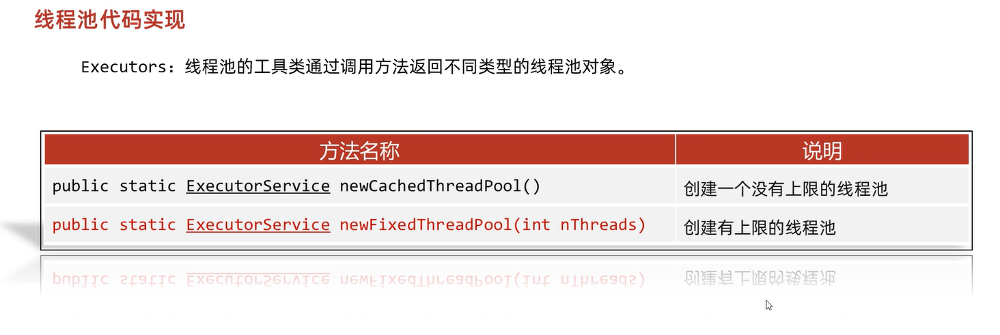
newCachedThreadPool说是没有上限的线程池，实际上还是有的，是int的最大值。并且普通电脑在创建几千个的时候就蚌埠住了，所以理论上是没有上限的线程池。
- 提交任务：使用execute()或submit()方法将任务提交给线程池。
1 | executor.execute(new MyRunnable()); // 提交Runnable任务 |
- 关闭线程池：在不再需要线程池时，需要调用shutdown()方法来关闭线程池。这将停止接受新任务，并逐渐关闭线程池中的线程。
1 | executor.shutdown(); |
实际开发中不会关闭线程池，比如游戏的服务器之类的，实时打开，在学习的时候还是需要了解流程的。
3.2 八股：Java线程池中submit() 和 execute()方法有什么区别？
两个方法都可以向线程池提交任务，execute()方法的返回类型是void，它定义在Executor接口中, 而submit()方法可以返回持有计算结果的Future对象，它定义在ExecutorService接口中，它扩展了 Executor接口，其它线程池类像ThreadPoolExecutor和ScheduledThreadPoolExecutor都有这些 方法。
3.3 演示线程池（个人认为理解线程池的需要看）
1 | //线程类： |
首先，在main方法中，不让main线程sleep，那么打印的结果如下：可以看到，线程池1中创建了1,2,3,4,5，一共5个线程（打印结果比较长我就截图一部分，实际上是5个）
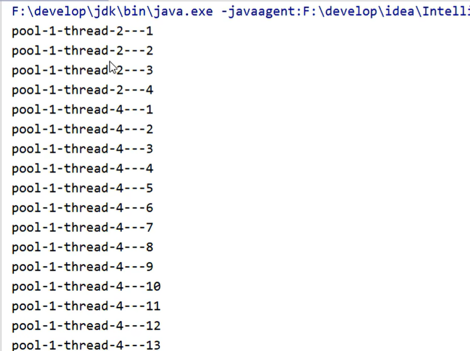
如果让main线程睡眠，那么可以让线程1在main方法sleep时赶紧结束run方法中的逻辑，使得线程1执行结束后返回线程池，在main线程sleep的时间结束后，再次调用submit方法时，拿到的还是线程1
1 | //线程类： |
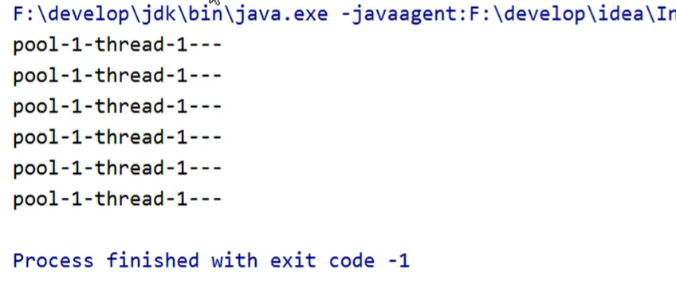
四、线程池原理
4.1 ThreadPoolExecutor类
在创建线程池的方法中（3.1节），曾经说过创建线程池使用工具类或者使用ThreadPoolExecutor类，实际上工具类的底层也是调用ThreadPoolExecutor类来创建线程池：
Executors类提供4个静态工厂方法：newCachedThreadPool()、newFixedThreadPool(int)、newSingleThreadExecutor和newScheduledThreadPool(int)。这些方法最终都是通过ThreadPoolExecutor类来完成的。
1 | public ThreadPoolExecutor(int corePoolSize, |
可以看到类里面有7个参数，这7个参数也就是线程池的核心参数。
4.2 八股：线程池七大核心参数
4.2.1 黑马讲的故事（方便记忆参数，可以跳过）
故事就是讲了饭店内只有3名正式员工，同时招待的顾客最大6人，但是剩下的3名员工是临时工，只有招待人数大于3人的时候才会去招人，否则就不招，辞退这三个临时工。
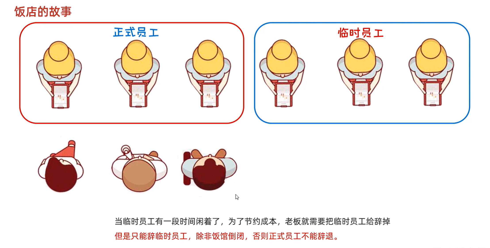
但是饭店小，只能允许10个人排队，超出的人就不给排队了
OK，现在根据故事给出的7个参数代换：
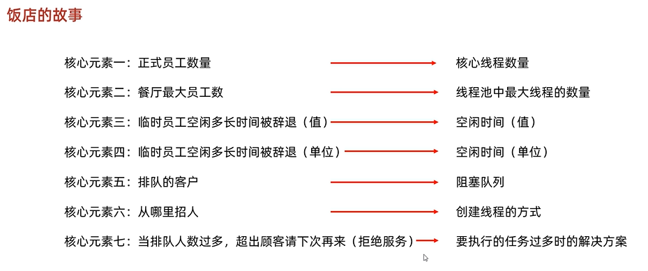
4.2.2 八股：7个核心参数
- int corePoolSize,核心线程数量，不能小于0
- int maximumPoolSize,最大的线程数量，减去核心线程=临时线程
- long keepAliveTime,空闲线程的最大存活时间
- TimeUnit unit,时间单位
- BlockingQueue
workQueue,任务队列 - ThreadFactory threadFactory,创建线程工厂
- RejectedExecutionHandler handler，任务的拒绝策略
4.3 线程池的工作原理流程（建议4.3全看，方便理解4.5的八股）
4.3.1 场景一
现在有如下场景：核心线程3个，临时线程3个，此时有5个任务进来的时候线程池应该如何创建线程？
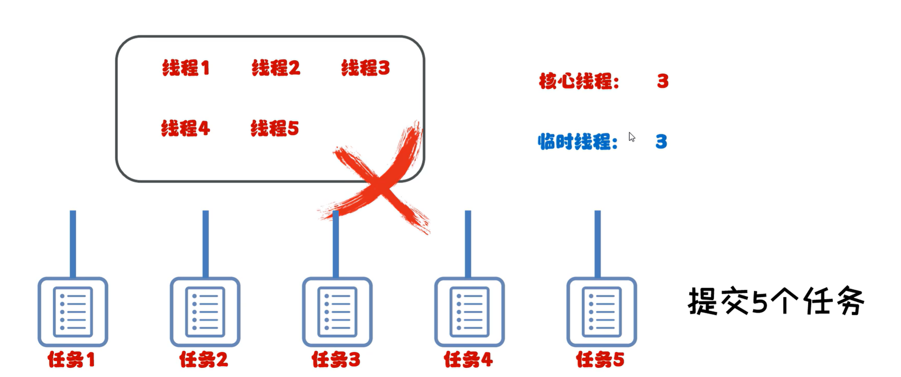
正确的是创建3个核心线程去处理前3个任务，而后两个任务应该排队，直到3个核心线程空闲出来才会被执行。
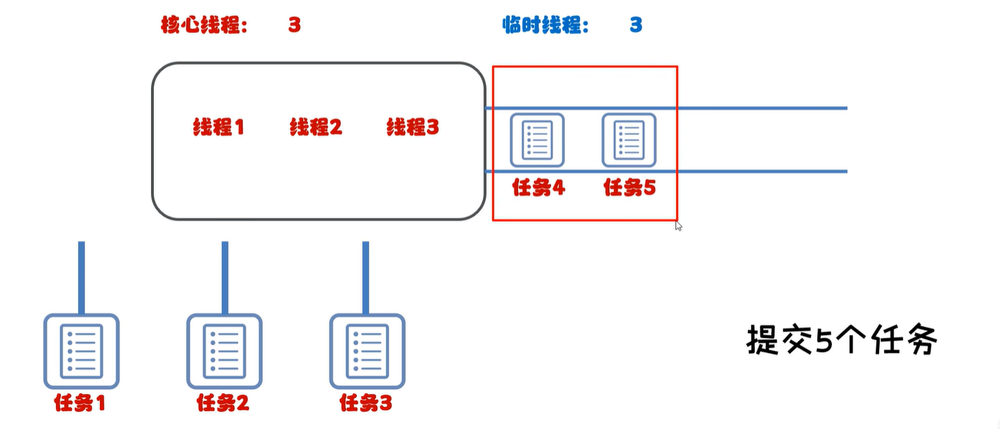
4.3.2 场景二
此时在场景一中，提交的任务数是8个，那么线程池如何创建线程？
答案是1,2,3任务由核心线程处理，4,5,6任务进入阻塞队列，7,8任务交给临时线程处理。
重点：
- 只有阻塞队列满了以后，才会临时线程
- 任务被线程处理的顺序不取决于先来先处理，比如案例中4,5,6任务先来但是7,8任务先被处理
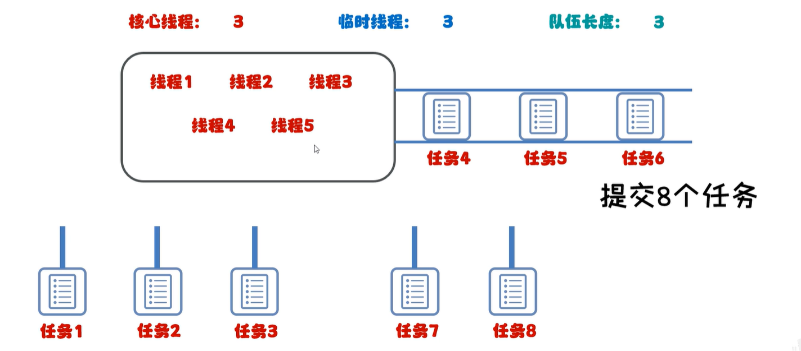
4.3.3 场景三
当提交的任务数超过了核心线程数（参数1），临时线程数（参数2减去参数1），队列数（参数6，创建阻塞队列的时候给队列传递参数决定容量的大小，比如ArrayBlockingQueue指定数组大小，见1.3节）的时候，多出来的线程就会触发拒绝策略（参数7）
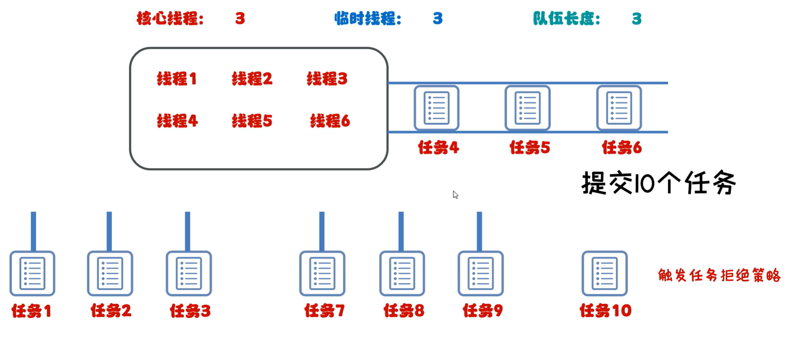
4.4 八股：任务拒绝策略（参数7）
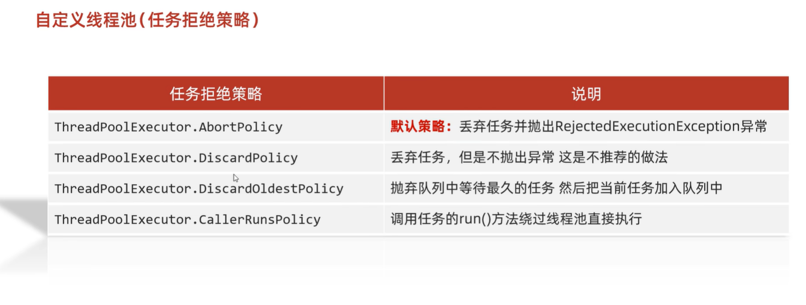
主要的是使用默认的策略。
如果使用第三个，那么在场景三中，被抛弃的是任务4，然后加入任务10，队列为5=>6=>10
如果使用第四个，那么任务10会跳过线程池，直接调用这个线程的run方法
4.5 阿里八股：线程池原理知道吗？以及核心参数？
首先线程池有几个核心的参数概念：
- 最大线程数maximumPoolSize
- 核心线程数corePoolSize
- 活跃时间keepAliveTime
- 阻塞队列workQueue
- 拒绝策略RejectedExecutionHandler
当提交一个新任务到线程池时，具体的执行流程如下：
- 当我们提交任务，线程池会根据corePoolSize大小创建若干任务数量线程执行任务
- 当任务的数量超过corePoolSize数量，后续的任务将会进入阻塞队列阻塞排队
- 当阻塞队列也满了之后，那么将会继续创建(maximumPoolSize-corePoolSize)个数量的线程来 执行任务，如果任务处理完成，maximumPoolSize-corePoolSize额外创建的线程等待 keepAliveTime之后被自动销毁
- 如果达到maximumPoolSize，阻塞队列还是满的状态，那么将根据不同的拒绝策略对应处理
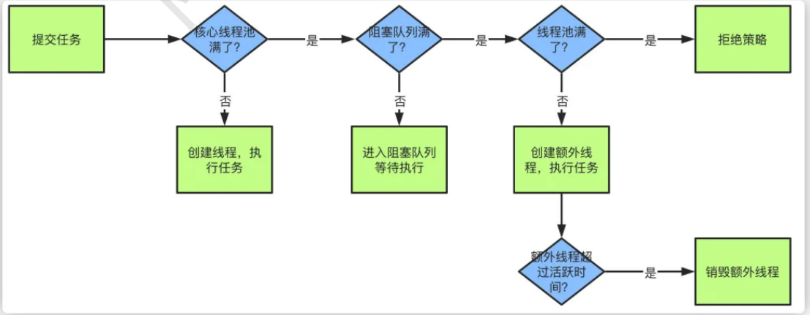
这是阿里面试多线程&JUC的35题，我直接照着搬答案过来了，是不是把第四大节看完后就很好理解了？